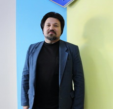

Головна
Е-місто
Молодіжний центр
Виконавчий комітет
Заклади охорони здоров'я
Символіка
Склад виконавчого комітету
Ніжин
Посилання
Адміністрація президента
Верховна рада
Асоціація міст
Чернігівська обласна державна адміністрація
Урядовий портал
Управління освіти
Ніжин водоканал
Національна дитяча "гаряча лінія"
Лінник Анатолій Валерійович
Посада: міський голова
(04631) 7-19-11, nemrada_post@cg.gov.ua
Салогуб Валерій Володимирович
Посада: секретар міської ради
(04631) 7-17-27
Олійник Григорій Миколайович
Посада: перший заступник міського голови з питань діяльності виконавчих органів ради
(04631) 7-19-11, nemrada_post@cg.gov.ua
Алєксєєнко Ігор Володимирович
Посада: заступник міського голови з питань діяльності виконавчих органів ради
(04631) 7-18-93, nemrada_post@cg.gov.ua
Колесник Сергій Олександрович
Посада: керуючий справами виконавчого комітету міської ради
nemrada_post@cg.gov.ua
Дорохін Володимир Гранлісович
Посада: директор Ніжинського коледжу культури і мистецтв імені Марії Заньковецької
тел.09894104493, dorvg@ukr.net
Дорошенко Надія Павлівна
Посада: директор ТОВ «Ніжинський коопринок»
тел. 0972667248, d1104np@gmail.com
Камачова Олена Борисівна
Посада: приватний підприємець
тел. 0688065653, kama4eva@gmail.com
Личманенко Геннадій Олегович
Посада: головний спеціаліст відділу господарського забезпечення виконавчого комітету Ніжинської міської ради
тел. 0970671322, 19ligo66@gmail.com

Луняк Євген Миколайович
Посада: професор НДУ ім. М.Гоголя
0677681874, lunjak@ua.fm
Одосовський Михайло Іванович
Посада: менеджер по роботі з агентами
тел. 0682369555, mihayloo@gmail.com
Прокопенко Віталій Олександрович
Посада: приватний підприємець
тел . 0974691409, viknaroff.com@ukr.net
Римський Юрій Анатолійович
Посада: геодезист
0673168339, rimskyy.yukiy@gmail.com
Хоменко Тамара Олексіївна
Посада: вчитель математики
0675012311, Tkhomenko1968@gmail.com
Пелехай Любов Миколаївна
Посада: в.о. старости Кунашівського старостинського округу Ніжинської міської ради
096 158 26 89, Kunashivka_rada@ukr.net
Рішення виконавчого комітету
Рішення виконавчого комітету, прийняті у травні 2020 року
Про відзначення Подяками виконавчого комітету Ніжинської міської ради
Про внесення змін до рішення виконавчого комітету Ніжинської міської ради від 24.10.2019р. № 348 «Про проведення у 2020 році приписки громадян 2003 року народження до призовної дільниці Ніжинського об’єднаного міського територіального центру комплектування та соціальної підтримки» ро внесення змін до ріш на приписку
Про розміщення тимчасових споруд
Про внесення змін до рішення виконавчого комітету Ніжинської міської ради від 03.02.2020 р. № 26 «Про заходи щодо попередження захворювань гострими респіраторними інфекціями серед населення міста»
Про організацію та проведення на території Ніжинської міської об’єднаної територіальної громади чергового призову на строкову військову службу громадян України у квітні - червні 2020 року
Про виведення дитини з прийомної сім’ї та припинення функціонування сім’ї
Рішення виконавчого комітету, прийняті у квітні 2020 року
Про надання одноразової матеріальної допомоги
Про продовження строку перебування дитини в сім’ї патронатного вихователя
Рішення виконавчого комітету, прийняті у березні 2020 року
Про відзначення Почесними Грамотами, Грамотами та Подяками виконавчого комітету Ніжинської міської ради
Про встановлення режиму роботи
Про видалення зелених насаджень на території м. Ніжина
Про затвердження лімітів споживання енергоносіїв на 2020 рік
Про поповнення міського резерву матеріально-технічних ресурсів для запобігання та ліквідації наслідків надзвичайних ситуацій
Про відзначення Почесною Грамотою виконавчого комітету Ніжинської міської ради
Про припинення опалювального сезону в Ніжинській міській об'єднаній територіальній громаді
Про припинення проведення в місті Ніжині ярмарку «Сад - город»
Рішення виконавчого комітету, прийняті у лютому 2020 року
Про відзначення Подяками виконавчого комітету Ніжинської міської ради
Про внесення змін до рішення виконавчого комітету Ніжинської міської ради від 24.10.2019р. № 348 «Про проведення у 2020 році приписки громадян 2003 року народження до призовної дільниці Ніжинського об’єднаного міського територіального центру комплектування та соціальної підтримки» ро внесення змін до ріш на приписку
Про розміщення тимчасових споруд
Про внесення змін до рішення виконавчого комітету Ніжинської міської ради від 03.02.2020 р. № 26 «Про заходи щодо попередження захворювань гострими респіраторними інфекціями серед населення міста»
Про організацію та проведення на території Ніжинської міської об’єднаної територіальної громади чергового призову на строкову військову службу громадян України у квітні - червні 2020 року
Про виведення дитини з прийомної сім’ї та припинення функціонування сім’ї
Зв'язок
Повідомлення
Пошта
Надіслати